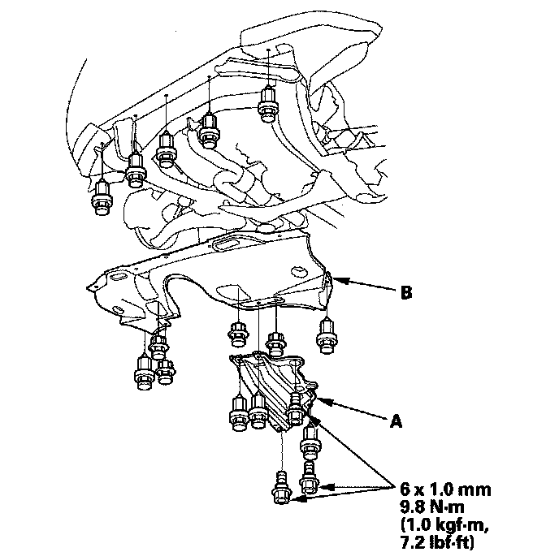
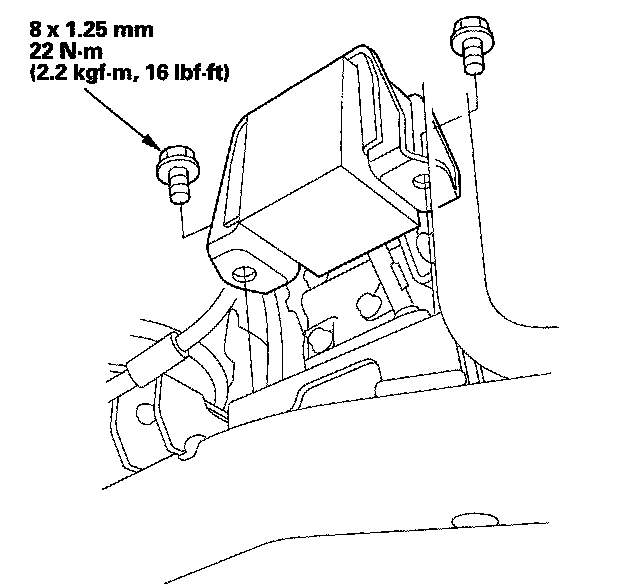
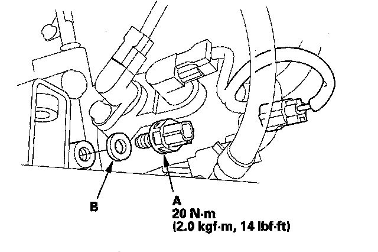

3rd Clutch Transmission Fluid Pressure Switch Replacement
3rd Clutch Transmission Fluid Pressure Switch Replacement1. Raise the vehicle up on a lift, or apply the parking brake, block both rear wheels, and raise the front of the vehicle. Make sure it is securely supported.
2. Remove the transmission undercover (A) and splash shield (B).

3. Remove the damper from the front subframe.

4. Disconnect the 3rd clutch transmission fluid pressure switch connector, and remove the switch.

5. Install the new 3rd clutch transmission fluid pressure switch (A) and a new sealing washer (B) and tighten the switch.
6. Make sure there is no water, oil, dust, or foreign particles inside the connector.
7. Connect the connector securely.
8. Install the damper on the front subframe.
9. Install the splash shield and transmission undercover.